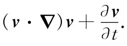

首先，我们按照一种纯抽象的、理论的方式来讨论流体的运动，然后才考虑一些特殊例子。要描述流体的运动，我们必须给出它在每一点上的性质。比方，在不同地方，水（让我们称该流体为“水”吧）以不同的速度 在运动。因此，要确定流动的特性，就必须给出任何时刻处于每一点的速度的三个分量。如果能够找到确定速度的方程式，那么我们就可能知道流体在所有时刻是怎样运动的了。然而，速度并非流体所具有的逐点变化的唯一性质。我们刚才已讨论过压强 的逐点变化，此外还有其他各种变量，可能也存在密度 的逐点变化。并且，该流体可能是一导体，其中载有在大小和方向上都逐点变化的密度为j的电流 ，还可能存在逐点变化着的温度 或磁场 ，等等。因此，用以描述整个情况所需的场的数目就将取决于问题到底有多么复杂。当其中的电流和磁场对于确定流体行为起主要作用时就会出现一些有趣的现象，这个学科称为磁流体动力学 ，目前正受到极大注意。然而，我们将不讨论这些较复杂的情况，因为在复杂性较低的水平上就已经有一些有趣的现象，而即使在这种较初级的水平也将是足够复杂的。
我们将考虑其中既没有磁场也没有导电性的那种情况，并且不必对温度操心，因为我们将假定密度和压强会按照唯一的方式确定任何一点的温度。事实上，我们将通过做出密度不变的假定——设想该流体基本上是不可压缩的——以减少工作的复杂性。换句话说，我们是在假定压强变化是这样的小，以致由其产生的密度变化可以忽略不计。如果情况不是这样，则将遇到越出这里即将要加以讨论的范围之外的一些现象——比如说，声音或冲击波的传播。我们已在某种程度上讨论过声波和冲击波的传播，因而现在将通过做出密度ρ是一恒量的近似，把我们关于流体动力学的考虑与这些其他现象隔离开来。不难判定，ρ不变的近似何时才是一个好的近似。我们可以说，若流动速度比流体中的声波的速率小得多，则无需担心密度的变化。水在我们尝试理解它的过程中所做的逃避与密度恒定的近似无关。那些的确容许逃避的复杂性将在下一章中讨论。
在有关流体的普遍理论中，人们必须从联系压强和密度的物态方程 出发。在我们的近似中，这个物态方程仅是
ρ=常数.
于是，这就是关于各变量的第一个关系式。下一个关系式表示物质守恒——若物质从某一点流出，则所遗留下来的量中就一定有所减少。设流体的速度为v，则单位时间流经单位表面积的质量就是ρv垂直于该面的分量。在电学中我们曾有过一个相似的关系式。从电学中也已知道，这个量的散度会给出单位时间内密度的减少率。同样，方程
（40.2）
表示流体质量的守恒，它是流体动力学中的连续性方程 。在我们的近似、即在不可压缩流体的近似下，ρ是恒量，因而连续性方程就简单地为
▽·v=0. （40.3）
流体速度v——像磁场B那样——具有零散度（流体动力学方程往往酷似电动力学方程，这就是为什么我们要先学习电动力学的缘故。有些人却从相反方面论证，认为人们应先学习流体动力学，以便此后能更易于理解电学。可是电动力学实际上要比流体动力学容易得多）。
我们将从牛顿定律得到下一个方程，而牛顿定律告诉我们速度是如何由于力的作用而发生变化的。流体中一个体积元的质量乘以其加速度必定等于作用在此体积元上的力。取一个单位体积元，并将单位体积所受的力写成f，便有
ρ×（加速度）=f.
我们将把这个力密度写成下述三项之和。曾经讨论过作用于单位体积上的压力为-▽p。此外，还有从远处作用着——像重力或电力那样——的一些“外”力。当它们是具有单位质量势ϕ的保守力时，它们就会给出力密度-ρ▽ϕ（若这些外力并非保守力，则必须把单位体积的外力写成f外 ）。因此，存在另一种单位体积的“内”力，它是由于在流动 的流体中也可能存在剪切应力的事实引起的。这被称为黏滞力，我们将把它写成f黏滞 。于是，流体的运动方程就是
ρ×（加速度）=-▽p-ρ▽ϕ+f黏滞 . （40.4）
在本章中，我们将假定液体是“稀薄”的，这是在黏滞性不重要的意义上说的，从而将略去f黏滞 。当去掉这一黏滞项时，我们就正在做出这样一种近似，即所描写的乃是某种理想材料而并非真正的水。冯·诺伊曼就曾深切地意识到当没有这一黏滞项与有这一项时所发生的巨大差别，而他也意识到，在直到约1900年时流体动力学的大部分发展中，几乎主要的兴趣都集中在求解具有这个近似、而几乎与实际流体毫无关系的那些漂亮的数学 问题上。他把从事这种分析的理论家标志为研究“干水”的人们。这样的分析不考虑流体的基本 性质。正是因为我们在本章的计算中都要忽略这一性质，所以才给它“干水的流动”这么一个标题。我们把对真实 的水的讨论推迟到下一章去。
图40-4 一流体质点的加速度
如果不考虑f黏滞 ，则在式（40.4）中除了关于加速度的表示式以外，我们就有了所需的一切。你或许会认为，关于流体质点的加速度公式会十分简单，因为似乎很明显，若v是流体中一个质点在某处的速度，则加速度该不过是∂v/∂t罢了。但这并不对 ——而且是由于某一相当微妙的原因。微商∂v/∂t是在空间一个固定点 的速度v（x，y，z，t）的变化率。我们所需要的却是关于流体一个特定部分 的速度变化有多快。试想象对其中一滴水用有色斑点来标明，以便能够对它进行观察。在一个小的时间间隔Δt内，这一滴水将移动至一个不同的位置。如果该滴水正在沿某一如图40-4所示意的路径运动，则它可能在Δt内从P1 移动至P2 。事实上，它将在x方向移动量vx Δt，在y方向移动量vy Δt，并在z方向移动量vz Δt。我们看到，若v（x，y，z，t）为时刻t在（x，y，z）处的流体质点的速度，则这同一 质点在t+Δt时刻的速度由v（x+Δx，y+Δy，z+Δz，t+Δt）给出，其中
Δx=vx Δt， Δy=vy Δt， Δz=vz Δt.
根据偏微商的定义——回顾式（2.7）——我们对它展开至第一级，有
因而加速度Δv/Δt为
可以用算符形式将这个式——把▽当成一个矢量看待——写成
 （40.5）
注意，即使∂v/∂t=0，以致在给定点的 速度不再变化，但仍可能有加速度。作为一个例子，以恒定速率沿一圆周流动着的水正在作加速运动，尽管在一给定点的速度并不发生变化。当然，原因在于，起初在圆周某点的特定部位的水，一会儿之后其速度已经有了不同的方向，这表明存在一个向心加速度。
上述理论的其余部分就只是数学方面的了——先将式（40.5）中的加速度代入式（40.4）而得到运动方程，然后求运动方程的解。我们得到
在此式中黏滞性已被略去。利用从矢量分析得来的下列恒等式：
可以把上述方程重新整理。如果现在定义 一个新的矢量场 Ω，例如v的旋度，
Ω=▽×v， （40.7）
则上面的矢量恒等式还可以写成
而我们的运动方程式（40.6）就变成
你可以利用式（40.7）通过核对方程中两边的各分量都彼此相等，而证实式（40.6）和（40.8）两方程是等效的。
矢量场Ω被称为涡度 。如果涡度处处为零，则我们就说流动是无旋的 。我们曾在§3-5中定义过一个称为矢量场的环流 的东西。在给定时刻，在流体中环绕任一闭合回路的环流等于流体速度环绕该回路的线积分：
（环流）=∮v·ds.
于是对于一个无限小的回路来说，单位面积 的环流——利用斯托克斯定理——就等于▽×v。因此，涡度Ω就是围绕一单位面积（垂直于Ω的方向）的环流。由此也可推断出：如果你将一小片灰尘——不是 无限小的点——放进该液体中任何地方，它就会以角速度Ω/2旋转。试试看你能否证明这个结论。你也可以对放在一个转台上的一桶水加以核对，这时Ω等于水的局部角速度的两倍。
如果我们仅对于速度场感兴趣，则可将压强从各式中消去。取式（40.8）两边的旋度，记住ρ是恒量，而任一梯度的旋度都为零，并利用式（40.3），便得
上述方程，结合下列两式
Ω=▽×v （40.10）
和
▽·v=0， （40.11）
就完整地描述了速度场v。从数学方面讲，如果在某一时刻知道了Ω，那么我们会知道速度矢量的旋度，而同时也明白速度的散度为零，因而若给定该物理情况，我们便具有确定每一处v所需的一切了（这刚好与磁学中的情况相似，在那里曾经有▽·B=0和▽×B=j/∈0 c2 ）。于是，一个给定的Ω会确定v，就正如一个给定的j会确定B一样。因此，一旦知道了v，方程式（40.9）便告诉我们关于Ω的变化率，由此可以获得下一时刻的新Ω。利用式（40.10），我们又求出一个新的v来，如此等等。我现在必须告诉你这些方程怎么会包含为计算流动所需的一切机制。然而，要注意这种方法只会给出速度场，我们已经失去了有关压强方面的一切信息。
我们指出该方程的一个特殊后果。若在任何时刻t各处Ω=0，则∂Ω/∂t也为零，以致在t+Δt时刻Ω仍然处处为零。我们得到了方程的一个解，流动永远是无旋的。假如流动从零转动开始，就永远不会有旋转。此时，待解的方程组为
▽·v=0， ▽×v=0.
它们恰好像自由空间中的静电场或静磁场方程组。对此我们以后将回来再做讨论，并考察其中某些特殊问题。